Shuttlecock velocity decay after smash and slice shots in badminton羽毛球比赛中杀球和切击后羽毛球速度衰减
Abstract摘要
This paper reports on the decay in shuttlecock velocity after smash and slice shots performed by elite and international players, based on the analysis of videos captured on a badminton court with high-speed cameras.
本文分析在羽毛球场上用高速相机拍摄的视频，研究精英及国际级球员完成杀球和切击后，羽毛球速度的衰减。
The trajectories of feather shuttlecocks show an exponential decay in velocity and an exponential increase in time-of-flight with distance, in accordance with the equation of motion of a shuttlecock subjected to high drag.
天然羽毛球的速度随飞行距离呈指数衰减，飞行时间则随距离呈指数增长，这与强阻力作用下的羽毛球运动方程一致。
The initial speed, which can exceed 500 km/h, is reduced by half every ≈3.35 m, depending on the physical parameters of the shuttlecock characterized by a speed index.
初速可超过 500 km/h，随后每飞行约 3.35 米速度就减半；具体数值取决于球速等级所反映的物理参数。
The videos show that plastic shuttlecocks, which are more resistant than feather shuttlecocks, deform at high speeds.
视频显示，塑料羽毛球虽然比天然羽毛球耐用，但在高速飞行中会变形。
The resulting decay of their drag coefficient with increasing speed makes them unsuitable for high-level play.
因此，其阻力系数随速度增大而降低，这使其不适合高水平比赛。
The study also shows that the spin induced by the slice shots of left-handed players or the reverse slice shots of right-handed players slows the shuttlecock down.
研究还表明，左手球员切击或右手球员反向切击引起的旋转，会使羽毛球减速。
Keywords: badminton, smash, velocity, drag force, time-of-flight
关键词：羽毛球、杀球、速度、阻力、飞行时间
1. Introduction1. 引言
The smash and slice in badminton are tactical shots, usually played from the back of the court, that often score a point.
羽毛球运动中的杀球和切击都是战术性的击球，通常在球场后场进行，通常可以得分。
The smash, hit with power and speed, is also a source of fantasy making badminton the fastest sport in the world: P. Tan set the women's record at 438 km/h, while S. Rankireddy set the men's record at 565 km/h.
力量与速度兼具的杀球令人惊叹，也使羽毛球被称为世界上最快的运动：P. Tan 创下 438 km/h 的女子纪录，S. Rankireddy 创下 565 km/h 的男子纪录。
Numerous studies have focused on the particular trajectories of shuttlecocks, which result from the strong aerodynamic drag experienced by these light (≈5 g) and elongated (≈7 cm) particles (1-8).
羽毛球质量轻（约 5 g）、形状细长（约 7 cm），飞行时受到强烈的空气阻力，因此形成独特的轨迹；已有大量研究对此展开分析（1—8）。
This drag is essential for keeping the shuttlecock within the confines of the court, as it strongly decreases the velocity of the shuttlecock (9-16): an initial velocity of ≃240 km/h (67 m/s) can decay within ≃0.6 s to ≃25 km/h (6.9 m/s).
阻力显著降低球速，是使羽毛球留在球场范围内的关键（9—16）：约 240 km/h（67 m/s）的初速，可在约 0.6 s 内降至约 25 km/h（6.9 m/s）。
The speed of the shuttlecock depends on the energy transfer between the player, the racket and the shuttlecock, as underlined by diverse bio-mechanical studies (17-22).
正如各种生物力学研究所强调的那样，羽毛球的速度取决于球员、球拍和羽毛球之间的能量传递（17-22）。
This article presents a quantitative analysis of the trajectories and velocity decay of feather and plastic shuttlecocks after smash shots performed by international and elite players.
本文定量分析国际级及精英球员完成杀球后，天然羽毛球与塑料羽毛球的轨迹及速度衰减。
The effect of the shuttlecock's physical parameters, in particular its mass, is also discussed.
还讨论了羽毛球物理参数（特别是其质量）的影响。
These can be adapted on demand to ensure similar playing conditions depending on atmospheric conditions on the planet.
可根据世界不同地区的大气条件调整这些参数，以保持相近的比赛条件。
The effect of slice and reverse-slice shots on velocity decay is also analysed, for both right- and left-handed players.
还分析了右手和左手球员的切击和反向切击对速度衰减的影响。
Some tactical conclusions are discussed, based on experimental and theoretical results.
根据实验和理论结果讨论了一些战术结论。
Considering the expected readership, the choice is made to use both the popular velocity unit (km/h) and the metric unit (m/s).
考虑到预期的读者群，选择使用流行的速度单位（km/h）和公制单位（m/s）。
2. Method2. 方法
A Phantom Miro 3a10 high-speed camera was used on the badminton court to capture high frame rate videos (3000 fps) of shuttlecock trajectories.
羽毛球场上使用 Phantom Miro 3a10 高速摄像机捕捉羽毛球轨迹的高帧率视频（3000 fps）。
The resolution of the videos was maximized to 1280×800 pixels with an exposure time of 333 μs for each frame.
视频分辨率最大为1280×800像素，每帧曝光时间为333μs。
A Canon camera was also used, with a capture frame rate set to 500 fps (1920×1080 pixels).
还使用了佳能相机，拍摄帧速率设置为 500 fps（1920×1080 像素）。
The videos captured the shots performed on court by elite national and international players, during the French international badminton championships 2025 (IFB) in Rennes and during a session dedicated to the present study.
视频记录了国内精英和国际级运动员在雷恩举行的 2025 年法国羽毛球国际赛（IFB）期间，以及本研究专门安排的实验环节中的场上击球。
Tracker (23, 24) a free Java video analysis tool, was used to track shuttlecock trajectories and extract speed or time-of-flight curves.
Tracker (23, 24) 一个免费的 Java 视频分析工具，用于跟踪羽毛球轨迹并提取速度或飞行时间曲线。
3. Drag force and shuttlecock’s speed index3. 阻力与羽毛球球速等级
Figure 1 shows the structure of feather shuttlecocks, composed of an array of diverging stems, the ends of which are at the convergent end of the skirt, joined together in an end ring.
图 1 展示了天然羽毛球的结构：多根羽轴向外展开，在裙部收拢的一端汇聚，并由端环连接。
Shuttlecocks do not exhibit mirror symmetry and are chiral bodies (25).
羽毛球不表现出镜像对称性，并且是手性体 (25)。
Due to the way the 16 feathers are placed into the cork, the airflow on the feathers is responsible for the natural counter-clockwise spinning of these projectiles as they propagate through the air.
16 根羽毛在球头上的排列方式，使气流作用于羽毛时，球在飞行中自然产生逆时针旋转。
The centre of mass (CoM) is on the shuttlecock symmetry axis, close to the cork.
质心 (CoM) 位于羽毛球对称轴上，靠近球头。
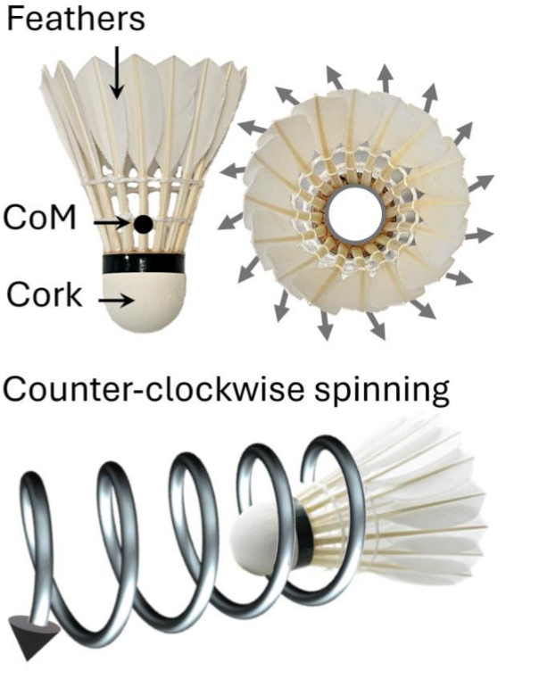
Figure 1. Structure of a feathered shuttlecock.
图 1. 羽毛球的结构。
The air flow on the 16 feathers (arrows) induces a natural counter-clockwise spinning.
16 根羽毛（箭头）上的气流引起自然的逆时针旋转。
The aerodynamics of shuttlecocks was studied in several papers, based on wind tunnel measurements, video analysis or simulations (1-8, 13, 15, 26, 27).
多篇论文基于风洞测量、视频分析或模拟对羽毛球的空气动力学进行了研究（1-8、13、15、26、27）。
The equation of motion of a shuttlecock was given in many papers and here we use:
许多论文都给出了羽毛球的运动方程，这里我们使用：
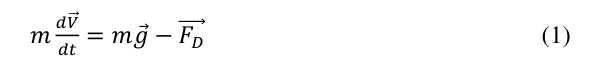
where g is gravity, m is the mass of the shuttlecock, V its velocity and FD the drag force.
其中 g 为重力加速度，m 为羽毛球质量，V 为速度，FD 为阻力。
This one depends on the air density ρ, the cross-section of the shuttlecock (πR²) with radius R and the drag coefficient CD.
这取决于空气密度 ρ、半径为 R 的羽毛球横截面 (πR²) 以及阻力系数 CD。
The equation reaches:
方程得出：
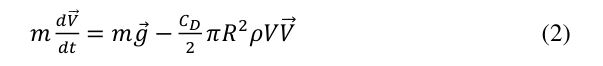
Peastrel et al studied the terminal velocity of a shuttlecock in vertical fall (28), where gravity accelerates the shuttlecock, which increases the drag force until weight and drag force balance each other.
Peastrel 等人研究了垂直下落时羽毛球的终端速度 (28)，其中重力加速了羽毛球，从而增加了阻力，直到重力和阻力相互平衡。
Then, the projectile reaches its terminal velocity V_T in free fall.
随后，羽毛球达到下落的终端速度 V_T。
The velocity is then constant (dV/dt = 0), with V_T anticolinear to g (2), which gives:
此时速度不再变化（dV/dt = 0）。原文称 V_T 与 g 反向共线（2），由此得到：
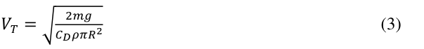
The typical values for m=5.25 g, ρ=1.2 kg m−3, πR²=35 cm2 and CD=0.6, give a terminal velocity VT≈24 km/h (or 6.5 m/s).
m=5.25 g、ρ=1.2 kg m−3、πR²=35 cm2 和 CD=0.6 的典型值给出终端速度 VT≈24 km/h（或 6.5 m/s）。
On earth, ρ changes with various parameters, such as atmospheric pressure, altitude, temperature or humidity.
在地球上，ρ随各种参数变化，例如大气压、海拔、温度或湿度。
Higher air density causes more drag, which strongly affects VT and the flying distance of the shuttlecock.
空气密度越高，阻力越大，这会严重影响VT 和羽毛球的飞行距离。
In order to ensure similar playing conditions across different locations around the world, the parameters of the shuttlecocks (mass, radius and/or CD) are adapted to atmospheric conditions.
为了确保世界各地不同地点的相似比赛条件，羽毛球的参数（质量、半径和/或CD）适应大气条件。
The badminton world federation (BWF) uses shuttlecocks with different "speed index" ranging from 75 (or V1) for slower shuttlecocks to 79 (or V5) for faster shuttlecocks.
世界羽联（BWF）使用不同球速等级的羽毛球，从较慢的 75 号（V1）到较快的 79 号（V5）。
Table 1 shows the evolution of VT measured for a plastic shuttlecock (Mavis 300) and feather shuttlecocks Yonex AS20 with different speed index (76/V2 to 78/V4).
表 1 比较塑料球 Mavis 300，以及不同球速等级（76/V2 至 78/V4）的天然羽毛球 Yonex AS20 的实测终端速度 VT。
The AS20 shuttlecocks used here had similar radius.
这里使用的 AS20 羽毛球具有相似的半径。
Their increasing mass, correlates with the increasing speed index and VT.
质量增加与球速等级及 VT 的升高相关。
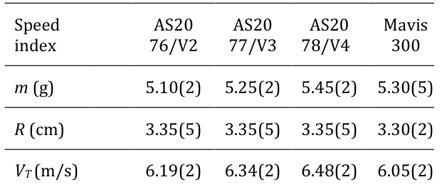
Table 1. Terminal velocity VT measured for different references of shuttlecocks with different speed index, mass m and radius R.
表 1：不同型号、球速等级、质量 m 和半径 R 的羽毛球，其实测终端速度 VT。
4. Exponentioal decay of the schuttlecock velocity4. 羽毛球速度的指数衰减
4.1 Theoretical decay of the shuttlecock velocity4.1 羽毛球速度的理论衰减
Lets consider the velocity of a shuttlecock reaching 500 km/h, as often reported in competition.
让我们考虑一下羽毛球的速度达到 500 公里/小时，正如比赛中经常报道的那样。
Since the drag force FD at VT≈25 km/h equals weight in free fall, and since F_D∝V², the drag force is about 400 times larger than weight after such a smash stroke.
由于VT≈25km/h时的阻力FD等于自由落体时的重力，并且由于F_D∝V²，所以在这样的杀球击球后，阻力大约是重力的400倍。
Weight is then negligeable at high speed.
因此，在高速飞行阶段，重力相对阻力可以忽略。
The equation of motion is then simplified, with the drag force anticolinear to the velocity:
阻力方向与速度相反，运动方程可简化为：
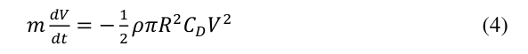
By introducing the infenitesimal travel dr=Vdt of the shuttlecock during dt, (4) can be rewritten :
通过引入 dt 期间羽毛球的无限小行程 dr=Vdt，(4) 可以重写：
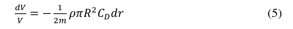
and integrating (5) gives :
对 (5) 积分得出：
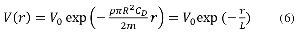
Equation 6 describes the exponential decay in shuttlecock velocity with the distance r, for an intial velocity V0.
方程 6 描述了初始速度为 V0 时，羽毛球速度随距离 r 的指数衰减。
L = 2m/(ρπR²C_D) is called the aerodynamic length and a typical value is L≈4.5 m (2).
L = 2m/(ρπR²C_D) 称为空气动力学长度，典型值为 L≈4.5 m (2)。
For general readers, it is convenient to use L_1/2 = (2/e)L ≈3.35 m, which is the characteristic velocity halving distance.
为便于一般读者理解，原文引入速度减半的特征距离 L_1/2 = (2/e)L ≈ 3.35 m。
Figure 2 shows the theoretical velocity decay from equation (6), for an initial speed V0=500 km/h (139 m/s) from the backline of the badminton court.
图 2 展示了从球场底线以 V0=500 km/h（139 m/s）初速击出后，式 (6) 预测的速度衰减。
The length of the court is 13.4 m ≈ 4L1/2, which means that the shuttlecock velocity is divided by 4 (125 km/h) at the net and by16 (≈31 km/h) at the opposite backline of the court, which approaches VT.
球场长度为13.4 m ≈ 4L1/2，这意味着羽毛球速度在网前除以4（125公里/小时），在球场对面的后线除以16（约31公里/小时），接近VT。
Then the weight can’t be neglected anymore to accurately describe the trajectory.
那么就不能再忽略重力来准确描述轨迹了。
The range of validity of equation (6) to describe the trajectory is therefore questionable.
因此，需要考察式 (6) 描述轨迹时的适用范围。
Figure 3a shows the trajectory of the center of mass of shuttlecock Yonex AS50 77/V3 after a smash shot (performed by T. Jr. Popov during the IFB 2025).
图 3a 展示了 Yonex AS50 77/V3 羽毛球在一次杀球后的质心轨迹，该球由 T. Jr. Popov 在 IFB 2025 中击出。
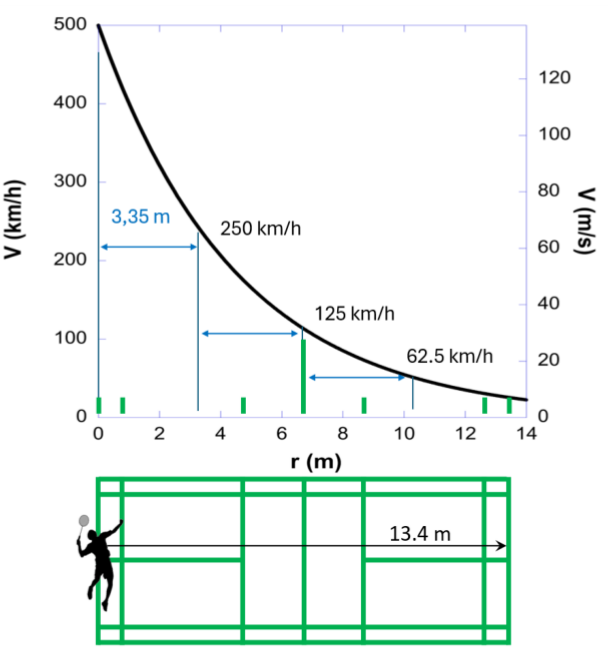
Figure 2. Theoretical exponential decrease of the velocity of the badminton shuttlecock along the court, for an initial speed of 500 km/h (≈139 m/s) and a velocity halving distance L1/2≈3.35 m.
图 2. 羽毛球沿球场速度的理论指数下降，初始速度为 500 km/h (≈139 m/s)，速度减半距离 L1/2≈3.35 m。
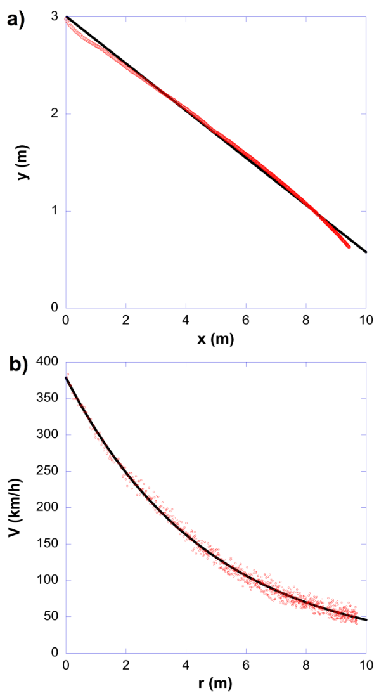
Figure 3. a) Shuttlecock trajectory: x is the coordinate along the court, y is the altitude. b) Velocity decay with the distance r from the smash (dots).
图 3：a）羽毛球轨迹，x 为沿球场长度方向的坐标，y 为高度；b）球速随离开杀球击球点的距离 r 衰减，散点为测量结果。
The black line is the exponential fit.
黑线是指数拟合。
The (x,y) trajectory is extracted from the video analysis, where x is the horizontal distance along the long court axis and y is altitude of the shuttle.
(x,y) 轨迹是从视频分析中提取的，其中 x 是沿长球场轴的水平距离，y 是羽毛球的高度。
The shot is performed in the downward direction to hit the court.
这次杀球向下飞行，最终落向场地。
The trajectory is fairly close to a linear trajectory (black line).
该轨迹相当接近线性轨迹（黑线）。
The y coordinate is affected by gravity during the time-of-flight of 300 ms.
飞行时间为 300 ms 时，y 坐标受重力影响。
However, after 9.5 m and a time of flight of 300 ms, the y coordinate deviates only by 10 cm from the linear trajectory.
然而，在 9.5 m 和飞行时间 300 ms 后，y 坐标仅偏离线性轨迹 10 cm。
This is less than the displacement of a free falling object in gravity during a timeof-flight of 300 ms, (1/2)gt² = 45 cm.
这小于自由落体物体在 300 毫秒飞行时间内在重力作用下的位移，(1/2)gt² = 45 厘米。
Indeed, the shuttlecock propagating in the air is not a free falling object, due to the important drag force.
事实上，由于阻力很大，在空中传播的羽毛球并不是自由落体物体。
Figure 3b shows the measured velocity decay V(r) of the shuttlecock with the distance r from the point of impact with the racket.
图 3b 显示了测得的羽毛球速度衰减 V(r)，距离球拍撞击点的距离为 r。
The fit of V(r) with the exponential law (black curve) given by equation (6) is in fairly good agreement with the experimental data and gives an initial velocity V0=379(1) km/h and aerodynamic length L=4.73(2) m.
V(r)与式(6)给出的指数定律(黑色曲线)的拟合与实验数据相当吻合，给出了初速度V0=379(1)km/h和空气动力学长度L=4.73(2)m。
L is close to the theoretical value, but it can strongly depend on the shuttlecock characteristic and the potential damage it sustains during gameplay, which alters the drag force.
L 接近理论值，但会明显受到球本身特性及比赛中损伤的影响，因为损伤会改变阻力。
Overall, it is reasonable to consider that equation (6) is relatively accurate to describe the shuttlecock trajectory after a smash with a high initial velocity and up to the first 10 m.
总体而言，可以合理地认为方程（6）对于描述高初速度杀球后直至前 10 m 的羽毛球轨迹是相对准确的。
4.2 The velocity of what? Cork vs centre of mass (CoM).4.2 测量谁的速度？ 球头与质心 (CoM)。
Given that a badminton shuttlecock is not a point object, one might wonder which velocity should be measured.
羽毛球并非质点，因此需要明确究竟应测量哪一部分的速度。
Should we take into account the speed of the CoM or that of the cork?
应测量质心（CoM）的速度，还是球头的速度？
Figure 4 shows the evolution of both velocities after a smash stroke, performed by A.S. Rasmussen during the IFB 2025 with a Yonex AS50 77/V3 (video 1).
图 4 展示 A.S. Rasmussen 在 IFB 2025 中使用 Yonex AS50 77/V3 完成杀球后，这两种速度的变化（视频 1）。
The fit of the velocity of the CoM with an exponential law (blue curve) fairly agrees with the data and gives an initial velocity V0=396(1) km/h and an aerodynamic length L=4.17(2) m.
质心速度的指数拟合（蓝色曲线）与实验数据较吻合，得到初速 V0=396(1) km/h，空气动力学长度 L=4.17(2) m。
The speed of the cork strongly deviates from the exponential law during the first meter, due to the change in orientation of the shuttle from almost vertical to horizontal: the initial speed of the cork is much higher (451(1) km/h, figure 4) than the one of the CoM (396(1) km/h).
由于球体姿态从近似竖直转为水平，球头速度在最初一米内显著偏离指数规律：其初速为 451(1) km/h（图 4），明显高于质心的 396(1) km/h。
Finaly, both velocities converge (within the experimental error bar) once the axis of the shuttle is aligned along the trajectory.
当羽毛球轴线与轨迹方向一致后，两种速度在实验误差范围内趋于相同。
Given that the BWF rules consider the point of impact of the cork on the court to award points, one might wonder whether it would not be more relevant to take into account its speed rather than that of the centre of mass.
考虑到世界羽联规则以球头触地位置判分，人们也可以思考：与质心速度相比，球头速度是否更具实际意义。
Herafter V0 refers to the initial speed of the CoM.
下文中，V0 均指质心的初始速度。
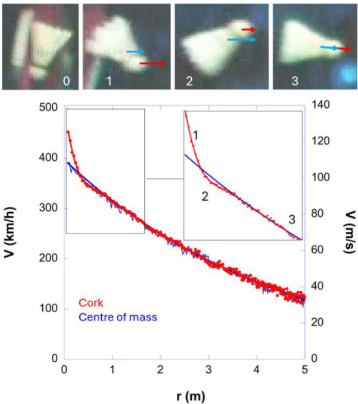
Figure 4. Velocities (blue and red arrows) of the CoM of the shuttlecock and of the cork, altered by the orientation from almost vertical (0) to almost horizontal after the smash.
图 4：杀球后，球体从近似竖直（0）转为近似水平；姿态变化会影响羽毛球质心和球头的速度，图中以蓝、红箭头表示。
The cork is faster (1) and slower (2) than the CoM and both velocities are equal once oriented along the axis of the shuttlecock (3).
球头速度先高于质心速度（1），随后低于质心速度（2）；当速度方向与羽毛球轴线一致时，两者相等（3）。
Figure 5 shows a closer inspection of the velocity of the CoM of the shuttle, monitored over the first 2.5 m (shot by C.- L. Wang during the IFB 2025, video 2).
图 5 更仔细地检查了前 2.5 米内的质心速度；该球由 C.-L. Wang 在 IFB 2025 中击出（视频 2）。
The data reveal damped oscillation of the CoM velocity, compared to the exponential velocity decay fit (red curve).
相对于指数衰减拟合（红色曲线），实测质心速度呈现阻尼振荡。
The correlation between the chronograph and V(r) highlights that the decelatation is higher when the shuttlecock axis is not aligned along the trajectory.
连续摄影图与 V(r) 的对应关系表明：当羽毛球轴线与轨迹方向不一致时，减速度更大。
Cohen et al explained this flipping process of the shuttle (2) as its axis aligns axis along the velocity direction.
Cohen 等人 [2] 解释了羽毛球的这一翻转过程，即球体轴线逐渐沿速度方向对齐。
Figure 4 shows that the oscillating componant is damped within ≈1 m for such high speed.
图 4 表明，在这样的高速条件下，振荡分量在约 1 米内衰减。
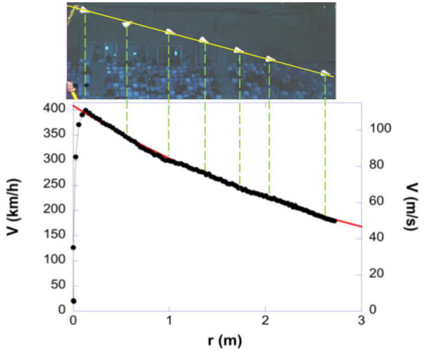
Figure 5. Deviation of the velocity of the CoM from the exponential law (red fit).
图 5. CoM 速度与指数定律的偏差（红色拟合）。
The deceleration is larger when the shuttle axis is not aligned along the trajectory (yellow line).
当羽毛球轴未沿着轨迹（黄线）对齐时，减速度较大。
Figure 5 shows the huge acceleration of the shuttlecock during the first 10 cm after the impact with the racket.
图5显示了羽毛球在与球拍撞击后的前10厘米内的巨大加速度。
The velocity increases from 21 to 399 km/h within 1.3 ms, which corresponds to an acceleration of about 8000 g!
球速在 1.3 ms 内从 21 km/h 增至 399 km/h，对应约 8000 g 的加速度，即约为重力加速度的 8000 倍！
The measured initial velocity (399 km/h) is slightly higher than the value from the fit at 10 cm from impact (396 km/h), while the extrapolation of the fit at the point of impact gives V0=409 km/h, which much higher than the 21 km/h measured.
测量的初速度（399公里/小时）略高于撞击点10厘米处的拟合值（396公里/小时），而撞击点处的拟合外推得出V0=409公里/小时，远高于测量的21公里/小时。
A precise measurement of V0 requires therefore determining the point of impact with an accuracy of ≈ 1 cm, considering that the velocity decays by ≈1 km/h every cm.
因此，考虑到速度每厘米衰减约 1 公里/小时，V0 的精确测量需要以约 1 厘米的精度确定撞击点。
4.3 “Fast” vs “slow” shuttlecocks4.3 “快”与“慢”羽毛球
How does the change in the speed index of the shuttlecock affects the V(r) curve?
球速等级的变化会如何影响 V(r) 曲线？
Figure 6 shows the velocity decay measured after different smash shots for two Yonex AS20 shuttlecocks with speed index 76/V2 and 78/V4 (table 1).
图 6 展示了球速等级为 76/V2 和 78/V4 的 Yonex AS20 羽毛球在不同杀球后的实测速度衰减（见表 1）。
The fit of the experimental curves with equation (6) gives similar initial velocities for both shots (≈320(2) km/h).
实验曲线与方程（6）的拟合给出了两个击球相似的初始速度（≈320（2）km/h）。
The aerodynamic length is larger for the 78/V4 (L=4.49(1) m) compared to the 76/V2 (L=4.23(1) m).
与 76/V2 (L=4.23(1) m) 相比，78/V4 (L=4.49(1) m) 的空气动力学长度更大。
Indeed, high-speed shuttlecocks have lower deceleration and higher average speeds than low-speed ones.
球速等级较高的羽毛球，其减速度较小，平均飞行速度较高。
The shuttles have similar shapes, and their different aerodynamic lengths and decelarations are due to their mass (Table 1), which is reasonably well proportioned to their aerodynamic length.
羽毛球具有相似的形状，并且它们不同的空气动力学长度和减速度是由于它们的质量造成的（表1），这与它们的空气动力学长度成相当好的比例。
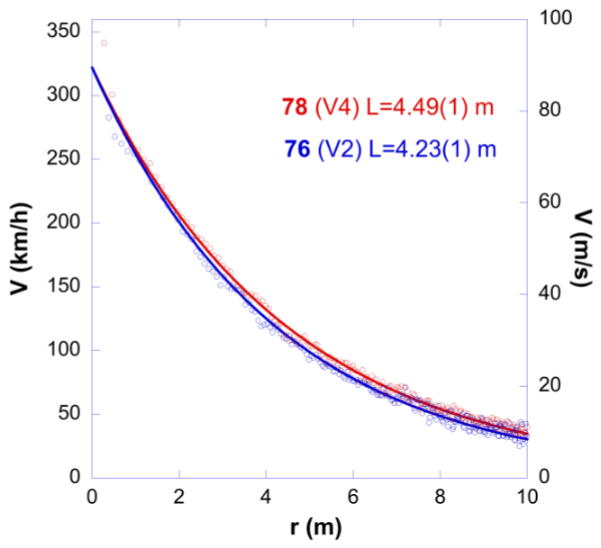
Figure 6. Velocity decay after smash shot for Yonex AS20 shuttlecocks.
图 6：Yonex AS20 羽毛球在杀球后的速度衰减。
The aerodynamic length is higher for the shuttlecock with fast speed index (78/V4, L=4.49(1) m) compared to the one with a slow index (76/V2, L=4.23(1) m).
较快的 78/V4 球（L=4.49(1) m）比较慢的 76/V2 球（L=4.23(1) m）具有更大的空气动力学长度。
4.4 Plastic shuttlecocks4.4 塑料羽毛球
The main problem with feather shuttlecocks used in competition is that they are easily damaged during play.
比赛用天然羽毛球的主要问题是容易在击打过程中损坏。
They therefore need to be replaced frequently to maintain their flight characteristics.
因此，需要经常更换它们以保持其飞行特性。
During the last decades synthetic shuttlecock emerged, made from plastics, with overwhelming advantages in durability, cost-effectiveness, and consistency in recreational play (15).
在过去的几十年里，由塑料制成的合成羽毛球出现了，在耐用性、成本效益和娱乐游戏的一致性方面具有压倒性的优势 (15)。
Plastic shuttlecocks, whose skirts are mainly made of nylon, are becoming increasingly popular in non-competitive badminton, as their flexibility gives them greater durability.
塑料羽毛球的裙部主要由尼龙制成，材料的柔韧性使其更耐用，因此在非竞技活动中越来越普及。
However, this flexibility comes at the cost of inferior flight quality compared to feather shuttlecocks.
不过，这种柔韧性也使其飞行品质逊于天然羽毛球。
Several studies have shown that the drag coefficient of synthetic shuttlecocks decreases with increasing speed, due to the large deformation of the skirt with the air pressure at high speed (3-5, 10, 13, 26).
多项研究表明，合成羽毛球的阻力系数随着速度的增加而降低，这是由于高速时气压使裙部发生较大变形（3-5、10、13、26）。
A recent computational study (29) confirmed how the cross-sectional area of the skirt decreases with an increase in flight speed, leading to a significant reduction in the drag compared to that for an undeformed shuttlecock.
最近的一项计算研究 (29) 证实了裙部的横截面积如何随着飞行速度的增加而减小，从而与未变形的羽毛球相比，导致阻力显着降低。
Beyond a certain speed, the deformation of the skirt assumes a non-axisymmetric shape with a significant increase in its rate of deformation with speed.
超过一定速度后，裙部变形呈现非轴对称形状，其变形率随速度显着增加。
The terminal velocity of the plastic shuttlecock Mavis 300 is lower than the one of the feathers (table 1).
塑料球 Mavis 300 的终端速度低于天然羽毛球（表 1）。
Therefore, a shorter aerodynamic length would be expected compared to the feather AS20 shuttles.
因此，与羽毛 AS20 羽毛球相比，预计空气动力学长度更短。
Figure 7 shows its velocity decay for different initial velocities V0.
图 7 显示了不同初始速度 V0 下的速度衰减。
The fits of the V(r) curves with equation (6) show that the aerodynamic lenght increases with initial velocity, from L=4.03(1) m for V0=239 km/h to L=4.31(1) m for V0=304 km/h.
V(r)曲线与方程(6)的拟合表明，空气动力学长度随着初始速度的增加而增加，从V0=239 km/h时的L=4.03(1) m到V0=304 km/h时的L=4.31(1) m。
This confirms that the drag decreases with increasing initial speed.
这证实了阻力随着初始速度的增加而减小。
The video 3 and figure 8 show the deformation of the plastic shuttlecock from an initial shape with 16-fold symmetry to square or triangular shape after smash, due to the air pressure on the flexible skirt.
视频 3 和图 8 表明，杀球后气压作用于柔性裙部，使塑料球由原先的 16 重旋转对称形状变为近似方形或三角形。
The resulting change in the cross-section and drag coefficient of the shuttlecock lower the drag force.
由此产生的羽毛球横截面和阻力系数的变化降低了阻力。
As the shuttlecock slows down, the air pressure on the skirt decreases and the initial shape is almost recovered within ≈3 meters, but the radius of the shuttle, and therefore the drag, still depend on speed (3-5, 10, 13, 26).
随着球速下降，裙部承受的气压减小，球在约 3 米飞行距离内基本恢复初始形状；但其半径及阻力仍随速度变化（3—5、10、13、26）。
These data, measured directly on a badminton court under real conditions, confirm previous experimental and theoretical analyses concerning the variation in drag coefficient as a function of initial velocity due to the deformation of the skirt of plastic shuttlecocks.
这些数据是在真实条件下在羽毛球场上直接测量的，证实了先前关于由于塑料羽毛球裙部变形而导致阻力系数随初速度变化的实验和理论分析。
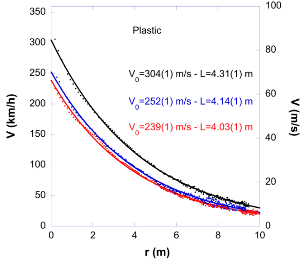
Figure 7. Velocity decay after smash shot for plastic Yonex Mavis 300 shuttlecocks for different initial velocities V0.
图 7：塑料羽毛球 Yonex Mavis 300 在不同初速 V0 下，杀球后的速度衰减。
The fit of the V(r) curves with equation (6) shows that the aerodynamic length L increases with V0.
V(r)曲线与式(6)的拟合表明，空气动力学长度L随着V0的增加而增加。
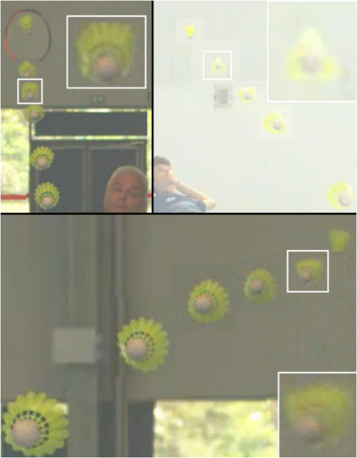
Figure 8. Deformation of the skirt of a plastic shuttlecock at high speed after impact with racket, with triangular or square shapes depending on initial velocity.
图 8. 塑料羽毛球裙部在受到球拍撞击后高速变形，形状取决于初始速度，形状为三角形或正方形。
As the shuttlecock slows down and spins, the initial shape is recovered within ≈3 m.
随着羽毛球减速并旋转，在约 3 m 内恢复初始形状。
5. Effect of slice and reverse slice on velocity decay5. 切击和反向切击对速度衰减的影响
The slice shot is another tactical technique, known for causing the shuttle to spin and altering the angle of return.
切击是一种战术性击球方式，会使羽毛球旋转并改变回球角度。
Kitta conducted experiments on feather shuttlecock (1) and concluded that the shuttlecock with spin experiences a marginally larger drag compared to shuttle without spin.
Kitta 对羽毛球 (1) 进行了实验，得出的结论是，与不带旋转的羽毛球相比，带旋转的羽毛球受到的阻力稍大。
A recent study explained why the slice shot of the left-handed player (LH) is more efficient than the slice shot of the righthanded player (RH) (25), due to the chiral nature of a shuttlecock (figure 1).
近期研究指出，由于羽毛球具有手性（图 1），左手球员（LH）的切击比右手球员（RH）的切击具有更明显的减速效果（25）。
The helical arrangement of the feathers is responsible for its natural counter-clockwise rotation as it propagates through the air.
羽毛的螺旋排列使其在空气中传播时自然逆时针旋转。
Video 4 shows that the slice shots performed by right-handers induce a natural counterclockwise spinning.
视频4显示，右手选手进行的切击会产生自然的逆时针旋转。
On the contrary, the slice shots performed by left-handers induce an opposite clockwise spinning: the air flow on the feathers then stops the rotation and the shuttlecock, which finally spins naturally counter-clockwise.
相反，左手球员的切击会使球顺时针旋转；气流随后抑制这一旋转并减缓球的飞行，最终使球恢复自然的逆时针旋转。
During this clockwise to counter-clockwise spining for the slice shot of the LH, some kinetic energy is therefore transferred to rotation energy, which slows down more the shuttlecock.
左手切击使旋转由顺时针转为逆时针，在此过程中，部分平动动能转化为转动动能，进一步降低球速。
Reversively, the reverse slice shots performed by LH induce a natural counter-clockwise spinning, while the reverse slice shots performed by RH induce a clockwise to counter-clockwise spinning.
相反，LH 执行的反向切击会引起自然的逆时针旋转，而 RH 执行的反向切击会引起顺时针到逆时针旋转。
Figure 9 compares the decrease in shuttlecock velocity after slice shots and reverse slice shots for a left-handed player.
图9比较了左撇子球员在切击和反向切击后的羽毛球速度下降情况。
The V(r) curves show that the speed decreases more rapidly for the left-handed slice shot than for the left-handed reverse slice shot, as characterized by the fit of the curves to equation (6), which gives a shorter aerodynamic length <L>≈4.06 m for the LH slice compared to <L>≈4.53 m for LH reverse slice shot.
V(r)曲线显示，左手切击的速度下降得比左手反向切击更快，正如曲线与方程(6)的拟合所表征的那样，与左手反向切击的<L>≈4.53m相比，左手切击的空气动力学长度<L>≈4.06m更短。
Figure 10 shows that the situation is reversed for RH players (with shots performed with an AS20 76/V2 shuttlecock): the fit gives a longer aerodynamic length (L≈4.19 m) for the RH slice shot than for RH reverse slice (<L>≈3.21 m).
图 10 显示了 RH 球员的情况相反（使用 AS20 76/V2 羽毛球进行击球）：RH 切击的空气动力长度（L≈4.19 m）比 RH 反向切击（<L>≈3.21 m）更长。
Figures 9 and 10 show that, compared to a natural counter-clockwise rotation induced by a RH slice or a reverse LH slice, the opposite clockwise rotation induced by a LH slice or a reverse RH slice results in a more effective slowing down of the shuttlecock, which is consistent with a recent symmetry analysis (25).
图9和图10表明，与右手切击或反向左手切击引起的自然逆时针旋转相比，左手切击或反向右手切击引起的相反顺时针旋转会导致羽毛球更有效地减速，这与最近的对称分析一致（25）。
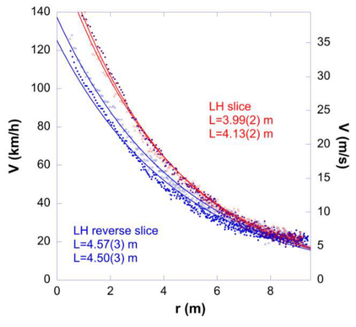
Figure 9. Speed decay of a AS20 V3/77 shuttlecock.
图 9. AS20 V3/77 羽毛球的速度衰减。
The aerodynamic length is lower for the for a left-hander (LH) slice (<L>≈4.06 m) compared to the LH reverse slice (<L>≈4.53 m).
与 LH 反向切击 (<L>≈4.53 m) 相比，左手 (LH) 切击 (<L>≈4.06 m) 的空气动力学长度较短。
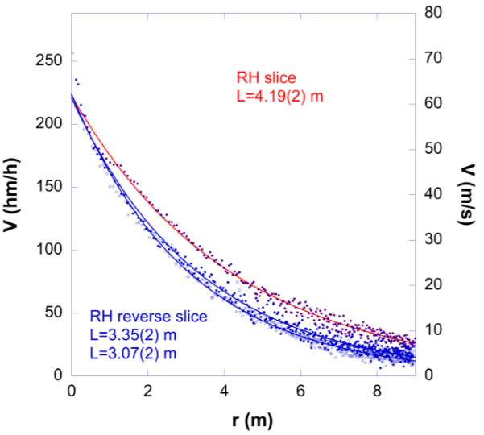
Figure 10. Speed decay of a AS20 76/V2 shuttlecock.
图 10. AS20 76/V2 羽毛球的速度衰减。
The aerodynamic length is lower for the right-hander RH reverse slice (<L>≈3.21(2) m) compared to the RH slice (<L>≈4.19(2) m).
右手球员反向切击的空气动力学长度（<L>≈3.21(2) m），小于其普通切击的空气动力学长度（<L>≈4.19(2) m）。
6. Conclusion and lessons learned6. 结论和经验教训
This study shows that it is possible to describe with a good accuracy the velocity change of a badminton shuttlecock after smash or slice shots as an exponential decay with distance.
本研究表明，杀球或切击后的球速变化，可用随飞行距离指数衰减的规律较准确地描述。
The aerodynamic properties of the shuttlecocks, described through their speed index, allows adjusting the shuttlecock to the local atmospheric conditions.
以球速等级表征的空气动力学特性，使羽毛球可以适配当地大气条件。
The speed decay is very fast as velocity is halved every ≈3.35 m, with important consequences in the game, which are of great interest for players or coaches.
速度衰减非常快，每约 3.35 m 速度减半，这对比赛产生重要影响，这引起了球员或教练的极大兴趣。
Figure 2 shows that the velocity decays is important within the first meter.
图 2 显示，球在最初 1 米内就会出现显著的速度衰减。
A smash at 500 km/h from the backline is equivalent to a smash at ≈400 km/h shot one meter in front of the backline.
从底线以 500 km/h 初速杀球，在速度效果上相当于从底线前方 1 米处以约 400 km/h 初速杀球。
It is therefore of tactical importance for a player in a defensive position, who has to lift the shuttlecock and who will have to face the smash of the oponent, to push the oponent at the back of the court.
因此，防守方在挑高球后将面临对手杀球，尽量把对手压到后场具有重要战术意义。
This point is evenmore interesting in terms of time-of-flight of the shuttlecock, which is found by intergrating equation (6):
就羽毛球的飞行时间而言，这一点更有趣，通过积分方程（6）可得出：
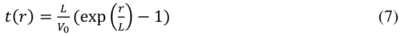
Figure 11 shows the measured dependence of the time-offlight with distance t(r) for a smash performed with a AS20 78/V4.
图 11 显示了使用 AS20 78/V4 执行的杀球测量的飞行时间与距离 t(r) 的相关性。
The fit of the data with equation (7) gives V0=300(1) km/h for this shot, and the aerodynamic length L=4.48(2) m is again in good agreement with the result for another shot in figure 6.
数据与方程（7）的拟合得出该击球的 V0=300(1) km/h，空气动力学长度 L=4.48(2) m 再次与图 6 中另一个击球的结果非常吻合。
Figure 11 shows that the time of flight for an initial speed of 300 km/h increases from ≈440 ms to travel over 10 m to ≈660 ms to travel over 11.5 m.
图 11 表明，初速为 300 km/h 时，飞行 10 米约需 440 ms，飞行 11.5 米则约需 660 ms。
This also highlights the importance of pushing the smasher towards the back of the court.
这进一步说明，将对方杀球位置压至后场十分重要。
Indeed, for a given initial velocity V0, increasing the distance travelled from 10 to 11.5 metres increases the reaction time to defend the smash by 50%.
事实上，对于给定的初始速度 V0，将行进距离从 10 米增加到 11.5 米会使防御杀球的反应时间增加 50%。
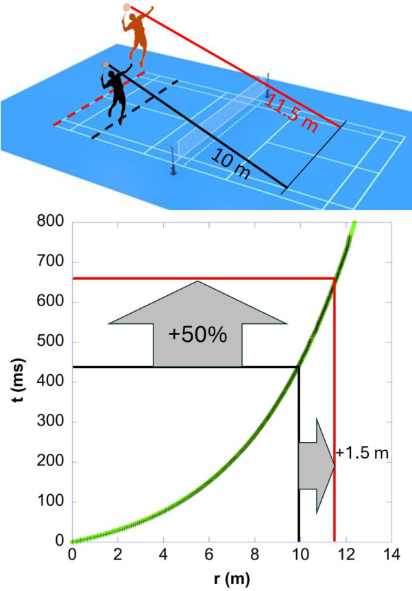
Figure 11. Time-of-flight of a AS20 78/V4 shuttlecock after a smash shot with an initial velocity of ≈300 km/h.
图 11. AS20 78/V4 羽毛球在初始速度约为 300 km/h 的杀球后的飞行时间。
The time-offlight increases by ≈+50% for a smash of 11.5 m vs 10 m.
与 10 m 的杀球相比，11.5 m 的杀球飞行时间增加了约+50%。
For sustainability reasons, the BWF initiative to transition from traditional feather shuttlecocks to synthetic-feather shuttlecocks has introduced equipment changes that could impact gameplay.
出于可持续性考虑，世界羽联推动从天然羽毛球转向合成羽毛球；这种器材变化可能影响比赛。
The flight characteristic of plastic shuttlecocks with an aerodynamic length depending on the initial velocity, makes it difficult to control their trajectory.
塑料羽毛球的飞行特性其空气动力学长度取决于初速度，因此难以控制其轨迹。
For this reason, plastic shuttlecock, which have inetresting longevity, cannot fully replicate the precise flight behavior of a high-quality natural feather shuttle.
因此，塑料羽毛球虽然耐用，却无法完全复现优质天然羽毛球的精确飞行特性。
As new synthetic shuttlecocks made of carbon appeared recently on the market (30), it will be interesting to compare the flight characteristics and speed decay of this new generation of shuttlecocks with traditional feathered shuttles, which are currently the benchmark for flight quality.
随着新型碳制成的合成羽毛球最近出现在市场上（30），将新一代羽毛球与传统天然羽毛球的飞行特性和速度衰减进行比较将很有趣，传统羽毛球是目前飞行质量的基准。
Acknowledgements致谢
E.C. would like to thank B. Kersaudy, A. Lièvre, E. Gautier and C. Allaire, the players who participated in this study, and M. Dureault, K. Nakamura and A. Gauthier for technical support.
E.C. 感谢参与本研究的球员 B. Kersaudy、A. Lièvre、E. Gautier 和 C. Allaire，以及 M. Dureault、K. Nakamura 和 A. Gauthier 的技术支持。
The author also thanks the BWF, the FFBad and especially C. Grandamas for providing acces to the court during IFB 2025 in Rennes.
作者还感谢 BWF、FFBad，特别是 C. Grandamas 在雷恩举行的 2025 年 IFB 期间提供了进入球场的机会。
E.C. would also like to thank Gillian Clark and Steen Pedersen for fruitful discussions.
E.C. 还要感谢 Gillian Clark 和 Steen Pedersen 进行了富有成效的讨论。
References / 参考文献（保留原文）
1. Kitta S, Hasegawa H, Murakami M, Obayashi S. Aerodynamic properties of a shuttlecock with spin at high Reynolds number. Procedia Engineering. 2011;13:271-7.
2. Cohen C, Texier BD, Quéré D, Clanet C. The physics of badminton. New Journal of Physics. 2015;17(6):063001.
3. Chan CM, Rossmann JS. Badminton shuttlecock aerodynamics: synthesizing experiment and theory. Sports Engineering. 2012;15(2):61-71.
4. Verma A, Desai A, Mittal S. Aerodynamics of badminton shuttlecocks. Journal of Fluids and Structures. 2013;41:89-98.
5. Mehta RC. Aerodynamics of Sport Balls, Badminton Shuttlecock and Javelin. Scholars Journal of Engineering and Technology. 2023;11(02):4-10.
6. Chen LM, Pan Yh Fau - Chen Y-J, Chen YJ. A Study of Shuttlecock's Trajectory in Badminton. (1303-2968 (Print)).
7. Texier BD, Cohen C, Quéré D, Clanet C. Shuttlecock dynamics. Procedia Engineering. 2012;34:176-81.
8. Goff JE. A review of recent research into aerodynamics of sport projectiles. Sports Engineering. 2013;16(3):137-54.
9. Texier BD, Cohen C, Dupeux G, Quéré D, Clanet C. On the size of sports fields. New Journal of Physics. 2014;16(3):033039.
10. Cohen C, Darbois Texier B, Quéré D, Clanet C. Physics of badminton shuttlecocks. Part 1 : aerodynamics. 2011. p. M10.008.
11. Phomsoupha M, Laffaye G. Shuttlecock velocity during a smash stroke in badminton evolves linearly with skill level. Computer Methods in Biomechanics and Biomedical Engineering. 2014;17(sup1):140-1.
12. Hubbard M, editor Spin dynamics of the badminton shuttlecock1997.
13. Cooke AJ. Shuttlecock aerodynamics. Sports Engineering. 1999;2(2):85-96.
14. Cooke A. Computer simulation of shuttlecock trajectories. Sports Engineering. 2002;5(2):93-105.
15. Woo T, Alam F, Kootsookos A. scientific development of badminton shuttlecocks. Sustainability and Sports Science Journal. 2024;2(3):149-65.
16. Zhou L. Aerodynamic characteristics and trajectory analysis of badminton shuttlecocks. Acta Bioeng Biomech. 2024;26(4):29-37.
17. Phomsoupha M, Laffaye G. The science of badminton: game characteristics, anthropometry, physiology, visual fitness and biomechanics. Sports medicine (Auckland, NZ). 2015;45(4):473-95.
18. Li S, Zhang Z, Wan B, Wilde B, Shan G. The relevance of body positioning and its training effect on badminton smash. Journal of Sports Sciences. 2017;35(4):310-6.
19. Ramasamy Y, Usman J, Sundar V, Towler H, King M. Kinetic and kinematic determinants of shuttlecock speed in the forehand jump smash performed by elite male Malaysian badminton players. Sports Biomechanics. 2024;23(5):582-97.
20. Ramasamy Y, Wei YM, Towler H, King M. IntraIndividual Variation in the Jump Smash for Elite Malaysian Male Badminton Players. Applied Sciences. 2025;15(2):844.
21. McErlain-Naylor SA, Towler H, Afzal IA, Felton PJ, Hiley MJ, King MA. Effect of racket-shuttlecock impact location on shot outcome for badminton smashes by elite players. Journal of Sports Sciences. 2020;38(21):2471-8.
22. Aguinaldo AL, Escamilla RF. Induced power analysis of sequential body motion and elbow valgus load during baseball pitching. Sports Biomechanics. 2022;21(7):824-36.
23. Brown D, Cox AJ. Innovative Uses of Video Analysis. The Physics Teacher. 2009;47(3):145-50.
24. https://opensourcephysics.github.io/tracker-website/ T.
25. Collet E. Left- versus right-handed badminton slice shots: opposite spinning of the chiral shuttlecock and Magnus effect. Comptes Rendus Physique. 2024;25:1-15.
26. Alam F, Chowdhury H, Theppadungporn C, Subic A. Measurements of aerodynamic properties of badminton shuttlecocks. Procedia Engineering. 2010;2(2):2487-92.
27. Reistad N. The jerk and the vertical fall of a shuttlecock. European Journal of Physics. 2022;43(5):055804.
28. Peastrel M, Lynch R, Armenti A. Terminal velocity of a shuttlecock in vertical fall. American Journal of Physics. 1980;48(7):511-3.
29. Zala D, Dechiraju H, Mittal S. Computational analysis of the fluid–structure interactions of a synthetic badminton shuttlecock. Physics of Fluids. 2024;36(1).
30. Tan KJZ, Goh WX, Boey D, Aziz L, Ozaki H, Nakashima H, et al. Impact of a new synthetic shuttlecock on badminton performance and player perception. Proceedings of the Institution of Mechanical Engineers, Part P: Journal of Sports Engineering and Technology. 2025.